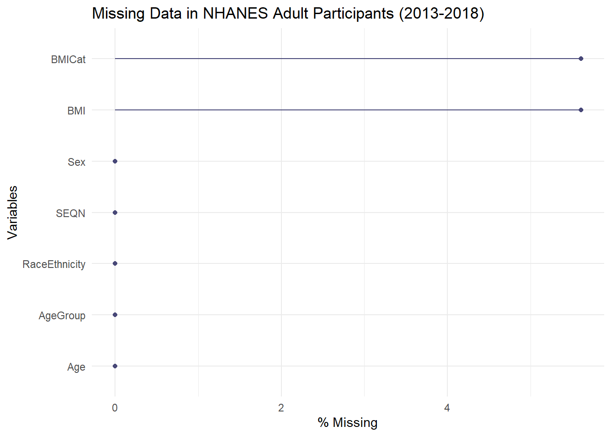

Exercise 3 (A) Vibe
In this tutorial, we will be going through the following exercise (found here).
We will go through the exercise problems and evaluate how well Gemini performs on each task. These tasks include importing and merging data, cleaning and filtering observations, and once the final dataset is completed, examining missing data, and displaying the data in a table.
In this part of the tutorial, we will go through the first set of tasks, which includes loading, subsetting the data according to eligibility criteria and necessary variables, creating an analytic dataset, and reporting the number of columns and variable names in this dataset. These tutorials were completed in RStudio (Posit team 2023) using R version 4.3.2 (R Core Team 2023), with the following packages: tidyverse (Wickham et al. 2019), and nhanesA (Ale et al. 2024), tableone (Yoshida and Bartel 2022), and naniar (Tierney and Cook 2023)
For this tutorial, I used Gemini’s free 2.5 Flash model.
Load Required Packages
First, we’ll run the following code to install and load all required packages into our R session.
Problem 1: Import and Translate Single-Year Data
For this first problem, we want to download the Demographic (DEMO) data from the 2013-2014 NHANES cycle using the nhanes package. We will also want translate = TRUE to automatically convert coded values into text labels.
Prompt Sent to Gemini:
Download the Demographic (DEMO) data for the 2013–2014 NHANES cycle using the nhanes() function.
Set
translated = TRUEso that coded values are automatically converted into text labels.Print the first few rows of the variables translated (
SEQN,RIAGENDR,RIDAGEYR, andRIDRETH3)Provide the R code to complete this task.
Gemini’s response:
No issues were observed. Gemini successfully downloaded and translated the 2013–2014 demographic data, and printed the head of the dataset to display the translated values.
Problem 2: Add Body Measures Data for a Single Year
Using our newly created dataset for 2013-2014 Demographic data, we want to download the Body Measures (BMX) data for the same 2013-2014 cycle and merge it to the demographic data from Problem 1.
Prompt Sent to Gemini:
Download the Body Measures (BMX) data for the 2013–2014 NHANES cycle.
Merge it with the Demographic (DEMO) data from Problem 1 using the participant identifier (
SEQN) and thefull_join()function.After merging, check the dimensions of the completed dataset (
nhanes_1314_complete). The dimensions should be 10175 rows and 72 columns.Provide the R code to complete this task.
Gemini’s response:
# Download the Body Measures (BMX) data for the 2013–2014 NHANES cycle
bmx_2013_2014 <- nhanes( 'BMX_H', translated = TRUE )
# Merge the DEMO and BMX data frames using the participant identifier (SEQN)
nhanes_1314_complete <- full_join(demo_2013_2014, bmx_2013_2014, by = "SEQN")
# Check the dimensions of the merged dataset
dim(nhanes_1314_complete)
#> [1] 10175 72That successfully performed a full merge. Gemini was able to load the correct Body Measures data for 2013–2014 and successfully performed a full join with the previously loaded Demographic data from the same year.
Problem 3: Import and Merge Multi-Cycle Data with Translation
Now that we have both the Demographic (DEMO) and Body Measures (BMX) data for the 2013–2014 cycle, we want to extend this by loading the same data for the 2015–2016 and 2017–2018 cycles. Once all cycles are loaded, we will combine them into a single dataframe named nhanes_raw.
Prompt Sent to Gemini:
Download the Demographic (DEMO) and Body Measures (BMX) data for the three NHANES cycles — 2013–2014 (H), 2015–2016 (I), and 2017–2018 (J) — using translated = TRUE for all downloads.
For each cycle, merge the DEMO and BMX datasets by the participant identifier (
SEQN) using thefull_join()function.Combine the merged datasets from all three cycles into a single dataframe named
nhanes_raw.After combining, check the dimensions of
nhanes_raw. The dimensions should be 29400 rows and 78 columns.Provide the R code to complete this task.
Gemini’s response:
# --- Cycle 2013-2014 (H) ---
# Download DEMO and BMX data
demo_H <- nhanes('DEMO_H', translated = TRUE)
bmx_H <- nhanes('BMX_H', translated = TRUE)
# Merge the datasets for this cycle
nhanes_H <- full_join(demo_H, bmx_H, by = "SEQN")
# --- Cycle 2015-2016 (I) ---
# Download DEMO and BMX data
demo_I <- nhanes('DEMO_I', translated = TRUE)
bmx_I <- nhanes('BMX_I', translated = TRUE)
# Merge the datasets for this cycle
nhanes_I <- full_join(demo_I, bmx_I, by = "SEQN")
# --- Cycle 2017-2018 (J) ---
# Download DEMO and BMX data
demo_J <- nhanes('DEMO_J', translated = TRUE)
bmx_J <- nhanes('BMX_J', translated = TRUE)
# Merge the datasets for this cycle
nhanes_J <- full_join(demo_J, bmx_J, by = "SEQN")
# --- Combine all three cycles ---
# Use bind_rows to combine the merged datasets into a single dataframe
nhanes_raw <- bind_rows(nhanes_H, nhanes_I, nhanes_J)
# Check the dimensions of the final combined dataset
dim(nhanes_raw)
#> [1] 29400 78Based on the dimensions of Gemini’s final combined dataset, the code worked as intended. Gemini successfully loaded and translated the data for each specified cycle and combined them into a single dataframe.
Problem 4: Data Cleaning and Filtering
We now have a dataframe containing demographic and body measure data for the 2013–2014, 2015–2016, and 2017–2018 NHANES cycles. Using this combined dataset (nhanes_raw), we will begin the process of cleaning and preparing the data for analysis. This includes filtering the population to include only adults and creating new variables based on existing columns.
The steps include:
Filtering for adults aged 20 years or older
Renaming key variables for clarity (
RIAGENDRtoSex,RIDAGEYRtoAge,RIDRETH3toRaceEthnicity, andBMXBMItoBMI)Grouping race/ethnicity by combining “Mexican American†and “Other Hispanic†into a single “Hispanic†category
Creating an
AgeGroupvariable with categories: “20–39”, “40–59”, and “60+”Creating a
BMICatvariable to classify BMI as “Underweight”, “Normal weight”, “Overweight”, or “Obese”
Prompt Sent to Gemini:
Using the nhanes_raw dataset, create a cleaned dataset suitable for analysis:
Filter for adults: keep only participants aged 20 years or older.
-
Rename variables:
RIAGENDR→SexRIDAGEYR→AgeRIDRETH3→RaceEthnicityBMXBMI→BMI
-
Group Race/Ethnicity:
Combine
"Mexican American"and"Other Hispanic"into"Hispanic"Keep
"Non-Hispanic White","Non-Hispanic Black", and"Non-Hispanic Asian"as they areRecode all other categories (including NA) as
"Other"
Create
AgeGroup: categorizeAgeinto"20-39","40-59", and"60+".Create
BMICat: categorizeBMIinto"Underweight","Normal weight","Overweight", and"Obese".
Use tidyverse syntax and provide the R code to complete this task.
Gemini’s response:
# Create the cleaned dataset suitable for analysis
nhanes_adult <- nhanes_raw %>%
# Filter for adults aged 20 years or older
filter(RIDAGEYR >= 20) %>%
# Rename variables for clarity
rename(
Sex = RIAGENDR,
Age = RIDAGEYR,
RaceEthnicity = RIDRETH3,
BMI = BMXBMI
) %>%
# Group Mexican American and Other Hispanic into a single Hispanic category
# and recode all other categories (including NA) as "Other"
mutate(RaceEthnicity = case_when(
RaceEthnicity %in% c("Mexican American", "Other Hispanic") ~ "Hispanic",
RaceEthnicity == "Non-Hispanic White" ~ "Non-Hispanic White",
RaceEthnicity == "Non-Hispanic Black" ~ "Non-Hispanic Black",
RaceEthnicity == "Non-Hispanic Asian" ~ "Non-Hispanic Asian",
TRUE ~ "Other"
)) %>%
# Create AgeGroup categories
mutate(AgeGroup = case_when(
Age >= 60 ~ "60+",
Age >= 40 ~ "40-59",
Age >= 20 ~ "20-39"
)) %>%
# Create BMI categories
mutate(BMICat = case_when(
BMI < 18.5 ~ "Underweight",
BMI >= 18.5 & BMI < 25 ~ "Normal weight",
BMI >= 25 & BMI < 30 ~ "Overweight",
BMI >= 30 ~ "Obese"
))
str(nhanes_adult[, c("SEQN", "Sex", "Age", "AgeGroup", "RaceEthnicity", "BMI")])
#> 'data.frame': 17057 obs. of 6 variables:
#> $ SEQN : num 73557 73558 73559 73561 73562 ...
#> $ Sex : Factor w/ 2 levels "Male","Female": 1 1 1 2 1 2 1 2 1 2 ...
#> $ Age : num 69 54 72 73 56 61 42 56 65 26 ...
#> $ AgeGroup : chr "60+" "40-59" "60+" "60+" ...
#> $ RaceEthnicity: chr "Non-Hispanic Black" "Non-Hispanic White" "Non-Hispanic White" "Non-Hispanic White" ...
#> $ BMI : num 26.7 28.6 28.9 19.7 41.7 35.7 NA 26.5 22 20.3 ...Everything looks correct. Gemini successfully filtered the dataset, renamed the variables, and created the new grouped and categorized variables as expected.
Problem 5: Create Final Analytic Dataset
Now that the data has been correctly cleaned and filtered, the next step is to create a final, analysis-ready dataset named nhanes_analysis that includes only the key variables needed for analysis.
Prompt Sent to Gemini:
From the cleaned dataset, create a final analysis-ready dataset named nhanes_analysis.
-
Keep only the key variables needed for analysis:
SEQNSexAgeAgeGroupRaceEthnicityBMIBMICat
Ensure the dataset is tidy, with variables properly labeled and ready for statistical analysis.
Provide the R code to complete this task.
Gemini’s response:
# Create the final analysis-ready dataset by selecting key variables
nhanes_analysis <- nhanes_adult %>%
select(
SEQN,
Sex,
Age,
AgeGroup,
RaceEthnicity,
BMI,
BMICat
)
# Print the internal structure of the final dataset
str(nhanes_analysis)
#> 'data.frame': 17057 obs. of 7 variables:
#> $ SEQN : num 73557 73558 73559 73561 73562 ...
#> $ Sex : Factor w/ 2 levels "Male","Female": 1 1 1 2 1 2 1 2 1 2 ...
#> $ Age : num 69 54 72 73 56 61 42 56 65 26 ...
#> $ AgeGroup : chr "60+" "40-59" "60+" "60+" ...
#> $ RaceEthnicity: chr "Non-Hispanic Black" "Non-Hispanic White" "Non-Hispanic White" "Non-Hispanic White" ...
#> $ BMI : num 26.7 28.6 28.9 19.7 41.7 35.7 NA 26.5 22 20.3 ...
#> $ BMICat : chr "Overweight" "Overweight" "Overweight" "Normal weight" ...
# Print the first few rows of the final dataset to verify
print(head(nhanes_analysis))
#> SEQN Sex Age AgeGroup RaceEthnicity BMI BMICat
#> 1 73557 Male 69 60+ Non-Hispanic Black 26.7 Overweight
#> 2 73558 Male 54 40-59 Non-Hispanic White 28.6 Overweight
#> 3 73559 Male 72 60+ Non-Hispanic White 28.9 Overweight
#> 4 73561 Female 73 60+ Non-Hispanic White 19.7 Normal weight
#> 5 73562 Male 56 40-59 Hispanic 41.7 Obese
#> 6 73564 Female 61 60+ Non-Hispanic White 35.7 Obese
# Print the dimensions of the final dataset
print(dim(nhanes_analysis))
#> [1] 17057 7The final dataset has been successfully created. nhanes_analysis now contains the cleaned and formatted variables ready for analysis.
Problem 6: Investigating Missing Data
Now that our data has been properly filtered and processed, we can re-examine patterns of missingness. We’ll start by checking the number of missing values in each variable, then use the naniar package to visualize the extent of missing data in the nhanes_analysis dataset.
Prompt Sent to Gemini:
Now that the data has been filtered and processed, re-examine patterns of missingness in the nhanes_analysis dataset.
Check the number of missing values in each variable.
Use the
naniarpackage andgg_miss_varfunction to visualize the extent of missing data across the dataset. Title the plot “Missing Data in NHANES Adult Participants (2013-2018)”Provide the R code to complete this task.
Gemini’s response:
# Check the number of missing values in each variable
colSums(is.na(nhanes_analysis))
#> SEQN Sex Age AgeGroup RaceEthnicity
#> 0 0 0 0 0
#> BMI BMICat
#> 956 956
# Create a bar plot of missing data by variable, showing percentages
gg_miss_var(nhanes_analysis, show_pct = TRUE) +
labs(title = "Missing Data in NHANES Adult Participants (2013-2018)")
Gemini was able to perform the missingness check successfully. It provided the correct code using the gg_miss_var function to visualize missing values, and the output clearly showed that missingness is limited to the BMI-related variables.
Problem 7: Investigating Missing Data
Finally, with the data correctly loaded and cleaned for our adult population, we’ll create a summary table of sample characteristics, stratified by Sex, using the tableone package.
Prompt Sent to Gemini:
With the data correctly loaded and cleaned for the adult population, create a summary table of sample characteristics using the tableone package.
Use the
nhanes_analysisdataset.Stratify the table by Sex.
Include the key variables:
Age,AgeGroup,RaceEthnicity,BMI, andBMICat.Report means and standard deviations for continuous variables, and counts and percentages for categorical variables.
Provide the R code to complete this task.
Gemini’s response:
# Define the variables to be included in the table
vars <- c("Age", "AgeGroup", "RaceEthnicity", "BMI", "BMICat")
# Define the variables to be stratified by (Sex)
strata <- "Sex"
# Create the summary table
table_one <- CreateTableOne(
vars = vars,
strata = strata,
data = nhanes_analysis,
factorVars = c("AgeGroup", "RaceEthnicity", "BMICat"), addOverall = TRUE, test = FALSE
)
# Print the table with both mean/SD for continuous variables
# and counts/percentages for categorical variables.
print(table_one, , smd = FALSE, showAllLevels = TRUE, missing = TRUE)
#> Stratified by Sex
#> level Overall Male
#> n 17057 8207
#> Age (mean (SD)) 50.03 (17.74) 50.23 (17.83)
#> AgeGroup (%) 20-39 5594 (32.8) 2687 (32.7)
#> 40-59 5571 (32.7) 2612 (31.8)
#> 60+ 5892 (34.5) 2908 (35.4)
#> RaceEthnicity (%) Hispanic 4290 (25.2) 1978 (24.1)
#> Non-Hispanic Asian 2168 (12.7) 1034 (12.6)
#> Non-Hispanic Black 3673 (21.5) 1759 (21.4)
#> Non-Hispanic White 6270 (36.8) 3094 (37.7)
#> Other 656 ( 3.8) 342 ( 4.2)
#> BMI (mean (SD)) 29.49 (7.21) 28.93 (6.33)
#> BMICat (%) Normal weight 4244 (26.4) 1966 (25.5)
#> Obese 6442 (40.0) 2790 (36.2)
#> Overweight 5168 (32.1) 2853 (37.0)
#> Underweight 247 ( 1.5) 105 ( 1.4)
#> Stratified by Sex
#> Female Missing
#> n 8850
#> Age (mean (SD)) 49.86 (17.66) 0.0
#> AgeGroup (%) 2907 (32.8) 0.0
#> 2959 (33.4)
#> 2984 (33.7)
#> RaceEthnicity (%) 2312 (26.1) 0.0
#> 1134 (12.8)
#> 1914 (21.6)
#> 3176 (35.9)
#> 314 ( 3.5)
#> BMI (mean (SD)) 30.01 (7.90) 5.6
#> BMICat (%) 2278 (27.2) 5.6
#> 3652 (43.5)
#> 2315 (27.6)
#> 142 ( 1.7)Gemini successfully generated the summary table using the tableone package. The table is correctly stratified by Sex and includes the key variables, providing a clear overview of the sample characteristics.
Summary
Throughout this tutorial, Gemini consistently performed well in executing each step of the data processing workflow. It correctly loaded and translated NHANES data across multiple cycles, successfully merged datasets, and applied the necessary cleaning and filtering steps. Gemini also handled variable recoding, missingness checks, and descriptive summarization with accuracy and appropriate use of R packages.
What Worked Well
Accurately loaded, translated, and merged NHANES data across multiple cycles
Correctly filtered for the adult population and applied exclusion criteria
Successfully renamed and recoded variables to match analysis specifications
Appropriately checked for missingness using the
naniarpackageGenerated a clear and complete summary table using the
tableonepackage, stratified by Sex